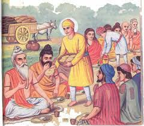

The True Bargain by Guru Nanak Dev Ji

Guru Nanak Dev Ji was just a child when his father gave him 20 rupees and told him to go to the market to do a profitable trade — a good bargain (Sauda). His father wanted him to learn the ways of business.
Guru Nanak Ji began walking toward the market but soon came across a group of hungry, poor sadhus (holy men) sitting under a tree. They had not eaten for days.
Young Nanak looked at them and said, “They are also children of Waheguru. Feeding them is better than buying goods to sell for profit.”
He used all the 20 rupees to buy food and served it to the hungry sadhus with love and respect. When he returned home, he told his father, “I did a Sacha Sauda – a true bargain.”
Though his father was initially upset, this story later became one of the most famous examples of Guru Nanak’s teachings. Even today, Gurdwara Sacha Sauda stands at that spot in Shekhupura, Pakistan.
“Sacha Sauda is not found in markets, but in acts of compassion and truth.”
Back